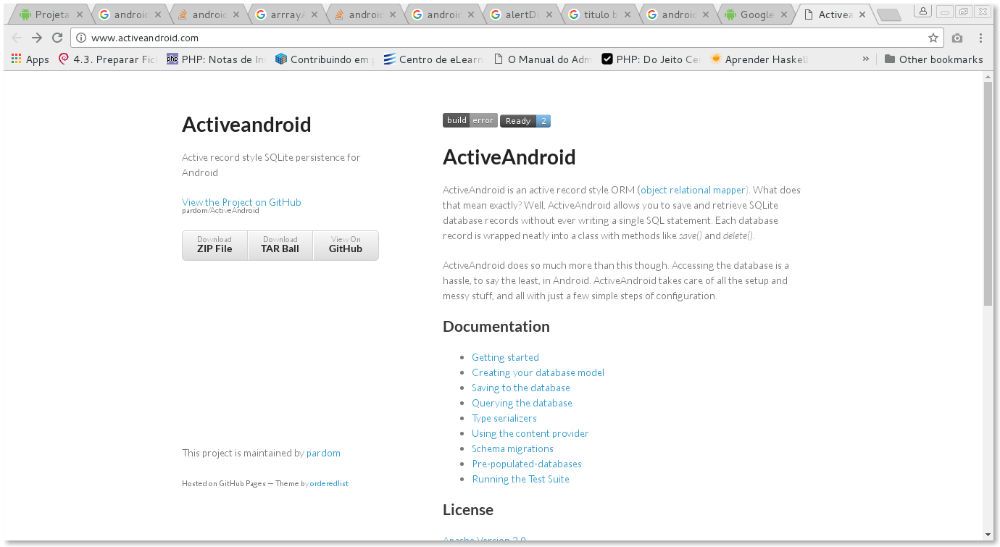
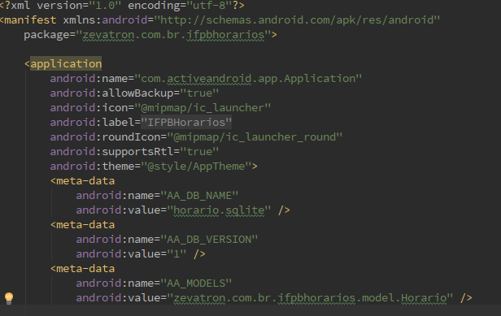
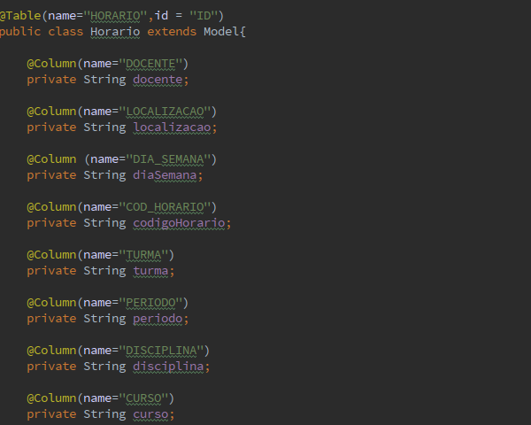

O aplicativo permite a listagem do quadro de horarios do IFPB Campus João Pessoa off-line
O aplicativo exibe a listagem de todos os cursos, permitindo ao usuário selecionar o desejado.
Recursos avançados
A biblioteca Active Android funciona como um ORM para manipulação de dados em SQLite Ajustes na aplicação
O Manifest da aplicação deve ser alterado, afim de permitir a manipulação de dados de forma semelhante a JPA Modelagem
Muito semelhante a JPA é necessário incluir notações na classe e em seus atributos, além de extender a clase Model da biblioteca 